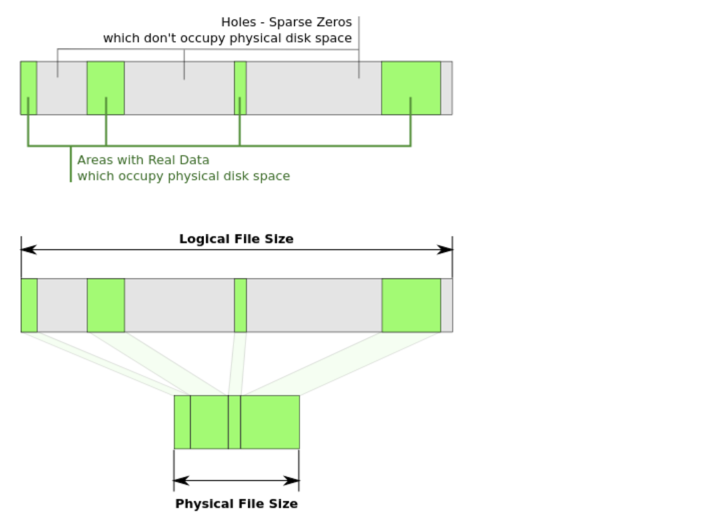

使用debugfs分析Ext2下的稀疏文件
本文将介绍 Ext2 文件系统下的稀疏文件表示，并使用 debugfs 对其进行分析。
环境准备
1 | # 创建一个 2G 大小的 Ext2 磁盘镜像文件 |
稀疏文件的本质
稀疏文件即一个文件的起始位置到结束位置之间存在“空洞”（如下图所示），所谓空洞，就是该文件区域没有被分配任何的磁盘空间，体现在 Ext2 文件系统元数据的层面就是——对应的数据块指针为空。

更形式化的描述为：只要一个文件在逻辑地址空间中存在至少一个由文件系统明确标记、且未分配物理数据块的连续“空洞”区域，该文件就可以被称为稀疏文件。
当应用层对稀疏文件的稀疏块进行读取时，文件系统通常的选择是：不进行任何的磁盘读取，而是直接返回一个用 0 填充的数据块。
稀疏文件分析
文件系统基本信息
首先使用 debugfs ext2.img 进入对该 Ext2 磁盘镜像文件的调试模式：
1 | $ debugfs ext2.img |
在 debugfs 的交互式终端中使用 ls 打印稀疏文件 8M.ext2 的基本信息：
1 | 12 100644 (1) 0 0 8388608 26-Dec-2025 16:35 8M.ext2 |
其中，inode 号为 12，文件大小为 8388608 字节（8MB）。
inode 详细信息
输入 stat <12> 对 inode 号为 12 的文件进行具体分析，得到以下信息：
1 | Inode: 12 Type: regular Mode: 0644 Flags: 0x0 |
其中的一些关键信息为：Blockcount（以 512B 为单位）为 240，即文件实际占用了 120KB 的磁盘空间；BLOCKS（以 BLOCK_SIZE 为单位，通常为 4KB）为 30，刚好与 Blockcount 的值对应。
尤其需要关注的是数据块指针的分布：
- 直接块（0-4）：17920、17921、17922、17923、17924
- 间接块（IND）：650 → 指向块 132-137（3972-3977）
- 二级间接块（DIND）：651 → 指向间接块 652
- 间接块（IND）：652 → 指向块 2032-2047（20464-20479）
总结，文件的所有逻辑块为 0-2047，即逻辑大小为 2048 * 4KB = 8MB，其中逻辑块 5-131、138-2031 没有被分配任何磁盘块，也就是所谓的稀疏文件的“空洞”。
间接块内容分析
接下来可以退出 debugfs 终端，直接对 ext2.img 的数据块内容进行分析。
首先可以验证一下间接块的一致性，使用下列命令打印指定 650 号磁盘块的内容：
1 | dd if=ext2.img bs=4096 skip=650 count=1 2>/dev/null | hexdump -C | head -20 |
输出如下所示：
1 | 00000000 00 00 00 00 00 00 00 00 00 00 00 00 00 00 00 00 |................| |
由于每个数据块指针占 4B 大小，且 Ext2 文件系统中的直接块数量为 12，因此 0x1e0（十进制表示 480） 对应的磁盘块号为 $480 / 4 + 12 = 132$，且该处的数据块指针为 0x00000f84（小端序），对应的十进制正好为 3972，与上一小节中 stat <12> 得到的数据一致，后面的 3973, 3974, … 也是同理。
间接块（IND）：650 → 指向块 132-137（3972-3977）
二级间接块也可以采用相同的验证方式，只不过多了一层间接层，在此就不再具体分析了。
数据块位图分析
Ext2 文件系统中引入了块组的概念，每个块组有自己独立的 inode 位图和数据块位图。我们再次使用 debugfs 对 ext2.img 进行调试。首先使用 stats 命令打印文件系统的总体元数据信息，由于我们通过 stat 8M.ext2 已经看到了该文件位于块组 0 中，因此我们主要关注块组 0 的元数据信息：
1 | ... |
可以看到，其数据块位图位于 129 块。我们可以采用和分析间接块时一样的方式，打印该块的数据：
1 | dd if=ext2.img bs=4096 skip=129 count=1 2>/dev/null | hexdump -C |
输出如下所示：
1 | ... |
我们可以验证一下直接索引所指向的数据块（17920-17924）的位图分配情况，其对应的上述地址应为 $17920 / 8 = 2240$，对应的十六进制为 0x8c0，可以看到为 1f，即连续的 5 个 1，完美匹配。
对比非稀疏文件
使用 stat <13> 打印 8M.zero 的文件信息，如下所示：
1 | Inode: 13 Type: regular Mode: 0644 Flags: 0x0 |
计算得到 $16408 * 512 = 8400896$，由于 Blockcount 中将数据块指针也包含在其中，因此文件实际所占用的磁盘空间甚至要大于文件大小（8388608B, 8M），与稀疏文件 8M.ext2 仅占用 120KB 空间形成鲜明对比。
参考资料
 微信
微信 支付宝
支付宝